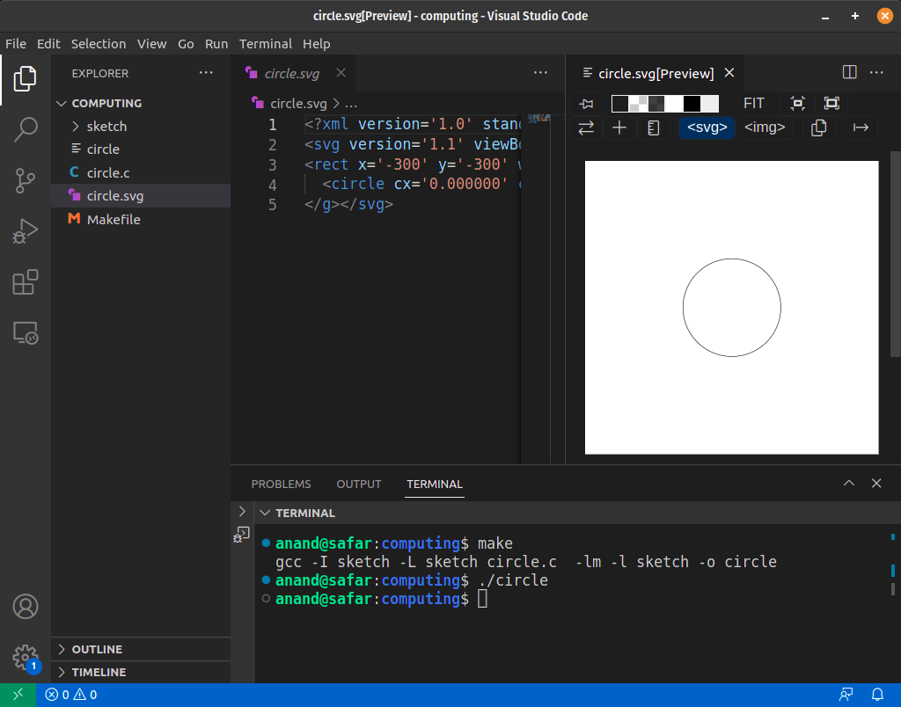

Software Setup
This page explains how to setup the coding environment for Ubuntu.
Note
If you are have a computer running Windows, please follow instructions on Installing Ubuntu on Windows using WSL before moving further.
Install C compiler
For this course, we support only Ubuntu distribution of Linux. If you have any other distribution, please find out how to install GCC compiler.
Run the following commands to install C compiler and other build tools.
sudo apt-get update
sudo apt-get install build-essential
Install Visual Studio Code
Visual Studio Code (vscode) is the recommended editor for this course. Please install it from Visual Studio Code Downloads page.
Note
If you are on Ubuntu 18.04, please install an older version by running the following commands.
wget https://update.code.visualstudio.com/1.75.1/linux-deb-x64/stable
sudo dpkg -i code_1.75.1-1675893397_amd64.deb
Install SVG extension in vscode
Follow the following instructions to install SVG Extension to preview SVG files directly in vscode. SVG is an image format that we are going to use in the course.
{kind=link}
- Open vscode and press
Ctrl+P - Type
ext install jock.svgand press Enter

Make a directory for your code
It is recommended to create a new directory for all your programs in this course. Let's call it computing.
Open your terminal and run the following command.
mkdir computing
You can change the current directory to that using:
cd computing
Download CSketch library
CSketch is a library for drawing simple shapes in C programming language and it is required for this course.
Run the following command in your terminal to install it.
curl https://anandology.github.io/csketch/install.sh | bash
This will download the csketch library to your current directory and also adds a sample file circle.c and a Makefile to build your C code.
Build your first program
Run make to compile the circle.c file in the current directory.
$ make
gcc -I sketch -L sketch circle.c -lm -l sketch -o circle
That compiled the circle.c and created executable file circle.
Run the circle program.
$ ./circle
That would have created a file circle.svg.
Open vscode to see the SVG image.
$ code .
That will open vscode with all the files in the current directory. Select circle.svg and press the preview button.

Once you click preview, you'll be able to see the image in the right.
